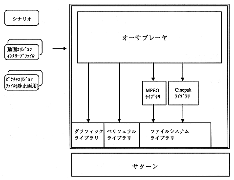

The functions of this system are as follows.
- Play an interactive movie based on a scenario file and a collision file created by the author editor.
- When a collision pasted on a still image or movie is selected, another still image or movie is played.
The system image of the author player is shown in Figure 4.1.

Figure 4.1 System image